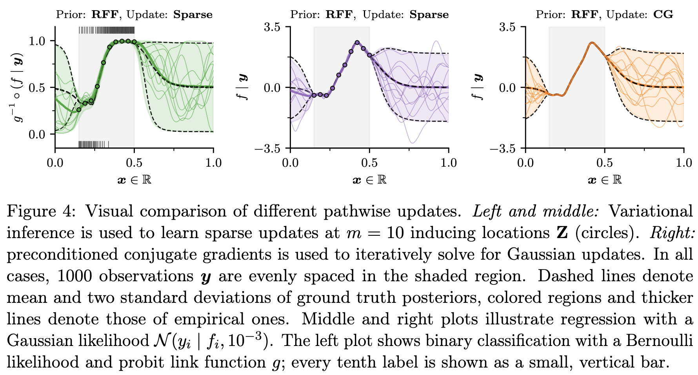
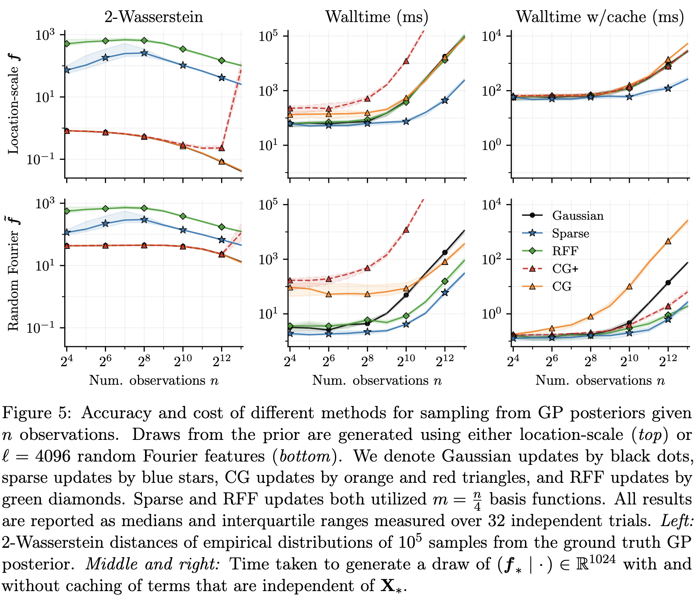

This blog post is about J. Wilson et al. (2020) and J. T. Wilson et al. (2021).
Matheron Rule
The Matheron rule states that, for random variables \(a\), \(b\) that are jointly Gaussian, the conditional distribution \(a | b = \beta\) is given by
\[ (a| b = \beta) \stackrel{d}{=} a + \Sigma_{a,b} \Sigma_{b,b}^{-1} (\beta - b) \]
where \(\stackrel{d}{=}\) means distributional equivalence, \(\Sigma_{a,b} := \text{Cov}(a, b)\) and \(\Sigma_{b,b} := \text{Cov}(b, b)\). This can be verified easily by matching the mean and covariance of the two sides of the equation.
Using this formulation of conditional Gaussian, we can extrapolate it to a Gaussian process (GP) and obtain the following result. For a GP \(f \sim GP(\mu, k)\) with marginal \(f_n = f(X_n)\) at observation locations \(X_n\) that gives noisy observations \(y = f(X_n) + \varepsilon\) for \(\varepsilon \sim N(0, \sigma^2 I_n)\), we have the Matheron rule for posterior GP \(f|y\)
\[ (f|y) (\cdot) \stackrel{d}{=} f(\cdot) + k(\cdot, X_n) (K_{n, n} + \sigma^2I_n)^{-1} (y - f_n - \varepsilon) \]
where \(K_{n,n} = k(X_n, X_n)\) is the Gram matrix of \(X_n\) with GP kernel \(k\).
At this point, we recall that the standard formulation posterior GP at test points \(X_* \in \mathbb{R}^m\) is given by
\[ \begin{split} f(X_*) |y &\sim N_{n}(\mu_{* | y}, K_{* | y}), \\ \mu_{* | y} &= \mu(X) + K_{*,n}^T (K_{n,n} + \sigma^2 I_n)^{-1} y,\\ K_{* | y} &= K_{*,*} - K_{*,n} (K_{n,n} + \sigma^2 I_n)^{-1}K_{*,n}^T. \end{split} \]
and to draw a sample \(f_*^{(1)}\) from such a posterior \(f(X_*) |y\), we have
\[ f_*^{(1)} = \mu_{* | y} + \sqrt{K_{* | y}} ~\xi, \qquad \xi \sim N(0, I) \]
where the matrix ‘square root’ \(\sqrt{A} := L\) where \(LL^T = A\). Such matrix square roots are usually obtained using Cholesky decomposition, which has \(O(m^3)\) time complexity for \(A \in \mathbb{R}^{m \times m}\). Thus, assuming the posterior mean and covariance are already obtained, the cost of drawing a posterior sample is \(O(m^3)\) for \(m\) test points.
Now, to samples directly using the Matheron rule formulation, we have
\[ (f|y) (X_*) \stackrel{d}{=} f(X_*) + k(X_*, X_n) (K_{n, n} + \sigma^2I_n)^{-1} (y - f(X_n) - \varepsilon) \]
and thus after obtaining a sample \(f^{(1),prior} = f_*^{(1),prior} \cup f_n^{(1),prior}\) from the prior \(f(X)\) with \(X = X_* \cup X_n\), we can obtain a posterior sample \(f_*^{(1)}\) as
\[ f_*^{(1)} = f_*^{(1),prior} + k(X_*, X_n) (K_{n, n} + \sigma^2I_n)^{-1} (y - f_n^{(1),prior} - \varepsilon^{(1)}), \quad \varepsilon^{(1)} \sim N(0, \sigma^2 I_n) \]
which cost \(O((m+n)^3)\) assuming all the mean and covariance are pre-computed as its takes \(O((m+n)^3)\) to compute the matrix square root \(k(X, X)\) to sample \(f^{(1),prior}\), although the cost could be reduced to \(O(m^3+n^3)\) using Schur complement. Thus, as it stands currently, there is no computational benefit of posterior sampling using the Matheron rule – even a loss when \(X_n \not \subset X_*\)! However, when we start to draw samples approximately, the Materon rule offers more flexibility.

Approximate Sampling
Recall the general Matheron rule for GP posterior yields
\[ (f|y) (\cdot) \stackrel{d}{=} \underbrace{f(\cdot)}_\text{prior} + \underbrace{k(\cdot, X_n) (K_{n, n} + \sigma^2I_n)^{-1} (y - f_n - \varepsilon)}_\text{update} \] where the first term on the right is a prior term, and the second term is the update term. The two computational bottlenecks for posterior sampling in this fashion are (a) the sampling from prior, and (b) the computation of matrix inverse and multiple for the update. When we turn to approximate sampling, the decoupling of terms due to the Matheron rule enables us to use different approximations to each of the prior and update terms, as opposed to applying one approximation throughout in standard posterior sampling.
Many approximation methods for GP exist:
- [Low Rank] Random Fourier feature (Rahimi and Recht 2007)
- [Sparse] Inducing points (Titsias 2009; Leibfried et al. 2020)
- [Iterative] Conjugate gradient (Pleiss 2020), SGD (Lin et al. 2023)
All of the above can be mixed-and-matched to approximate the prior and update terms of the Matheron update to utilise their respective pros. For example, the results in J. T. Wilson et al. (2021) suggest that random Fourier feature is good for approximating the prior term, while conjugate gradient is suitable for approximating the update.

